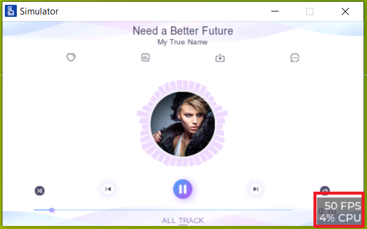
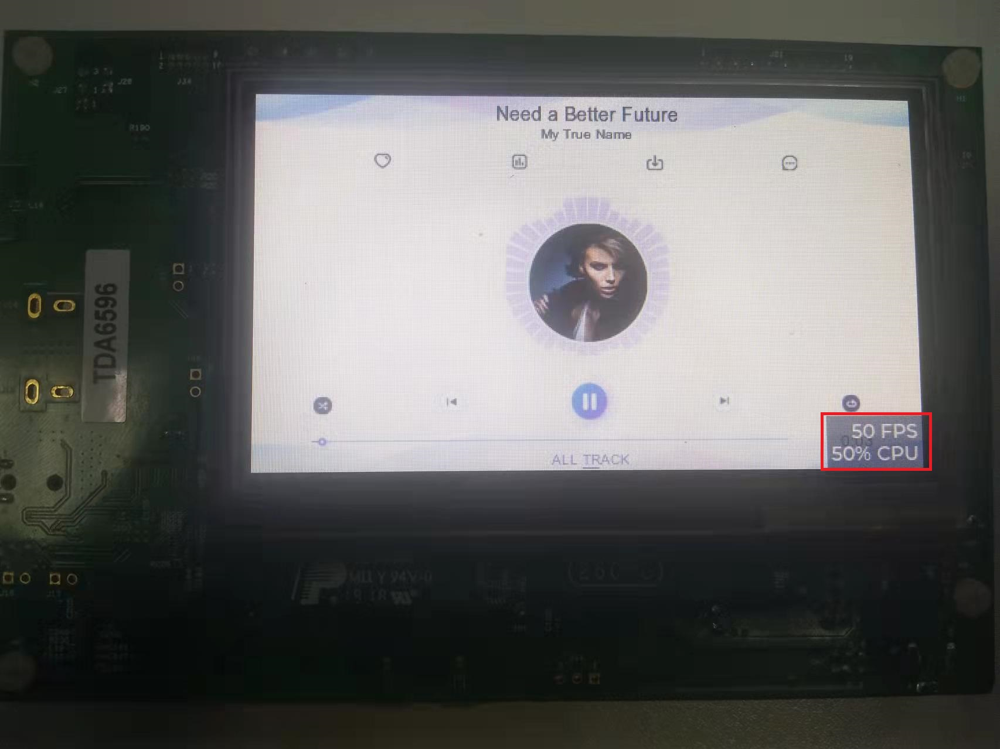

Performance monitor enablement
In actual development, if we want to know the performance of the app, perform the following steps:
- Enable the performance monitor in GUI Guider.
- Check the real-time performance results in simulator.Figure: Performance monitor

- Check the real-time performance results on boards.Figure: Checking real-time performance
